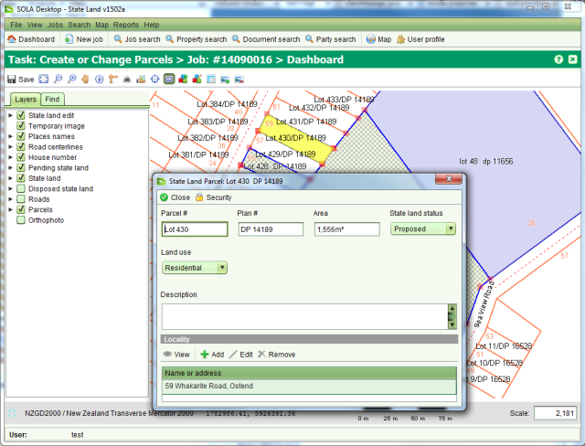

The Select State Land Feature tool allows you to select an existing parcel from the map and add it to the job. Once a parcel has been added to the job, you can update the parcel information and optionally change the parcel shape.
To use the tool, click any parcel displayed on the map. The parcel will be highlighted and the Parcel Details screen will appear allowing you to update the selected parcel information

Using the Select State Land Feature Tool
When you close the Parcel Details screen the bright yellow highlight will be removed from
the parcel and it will show with a dark blue border and light yellow fill and the parcel
nodes will be highlighted with light red squares. If you need to change the shape of the
parcel you can do so using the Edit State Land Parcel tool  .
.
To deselect the parcel and remove it from the job, you can click it again with the Select
State Land Feature tool or use
 Remove on the State
Land Parcel List screen. Be aware that this will remove any edits you may have done to the
parcel.
Remove on the State
Land Parcel List screen. Be aware that this will remove any edits you may have done to the
parcel.